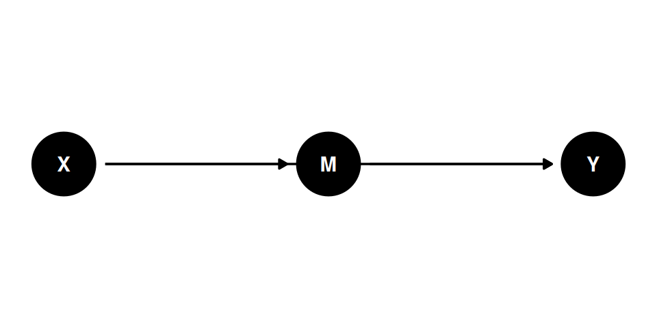
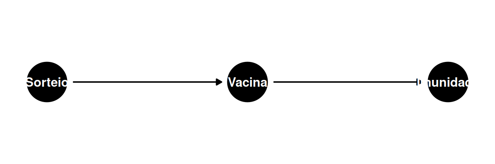
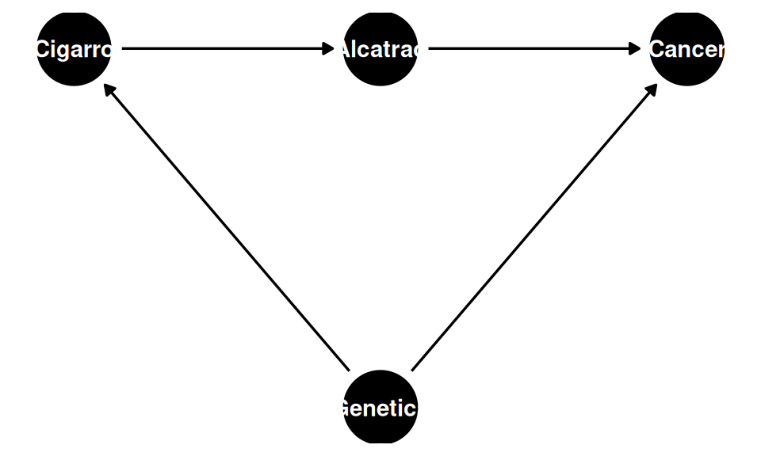
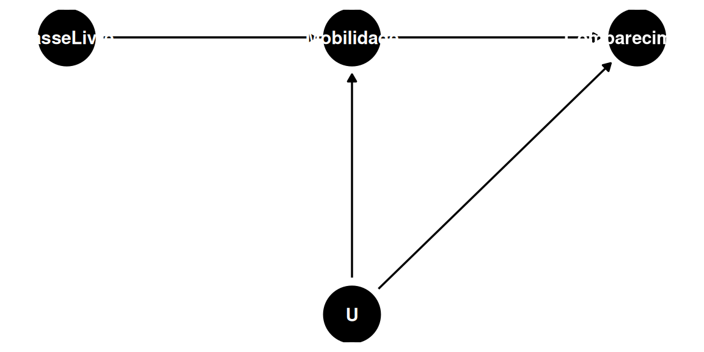

Code
dag_ex1 <- dagify(
D ~ A + B,
F ~ A,
Y ~ F + D,
A ~ U,
B ~ U,
coords = list(
x = c(U = 0, A = 1, B = 1, F = 2, D = 2, Y = 3),
y = c(U = 0, A = 1, B = -1, F = 1, D = -1, Y = 0)
)
)
ggdag(dag_ex1) + theme_dag()
Aula 3
Voltamos ao DAG da aula anterior:
dag_ex1 <- dagify(
D ~ A + B,
F ~ A,
Y ~ F + D,
A ~ U,
B ~ U,
coords = list(
x = c(U = 0, A = 1, B = 1, F = 2, D = 2, Y = 3),
y = c(U = 0, A = 1, B = -1, F = 1, D = -1, Y = 0)
)
)
ggdag(dag_ex1) + theme_dag()
Caminhos causais de \(D\) até \(Y\):
Para verificar, enumeramos todos os caminhos entre \(D\) e \(F\):
| Caminho | Status |
|---|---|
| \(D \leftarrow A \rightarrow F\) | Aberto |
| \(D \rightarrow Y \leftarrow F\) | Fechado (collider em \(Y\)) |
| \(D \leftarrow B \leftarrow U \rightarrow A \rightarrow F\) | Aberto |
Os dois caminhos abertos passam por \(A\). Logo, se controlarmos por \(A\), \(D\) e \(F\) se tornam independentes.
Isso tem uma implicação concreta: os resíduos de \(D\) e os resíduos de \(F\) nas regressões abaixo são independentes entre si:
\[ \tilde{D} = D - (\hat{\delta}_0 + \hat{\delta}_1 A) \]
\[ \tilde{F} = F - (\hat{\gamma}_0 + \hat{\gamma}_1 A) \]
onde \(\hat{\gamma}_0 + \hat{\gamma}_1 A\) é o valor predito de \(F\) na regressão \(F = \gamma_0 + \gamma_1 A + \omega\).
| Independência | Implicação empírica |
|---|---|
| \(Y \perp\!\!\!\perp B \mid D, F\) | \(\text{corr}(\tilde{Y}_1, \tilde{B}_1) = 0\) — equivale a \(Y \sim D + A\) e \(B \sim D + A\) |
| \(Y \perp\!\!\!\perp B \mid D, A\) | \(\text{corr}(\tilde{Y}_2, \tilde{B}_2) = 0\) |
| \(Y \perp\!\!\!\perp A \mid D, F\) | \(\text{corr}(\tilde{Y}_3, \tilde{A}) = 0\) |
| \(F \perp\!\!\!\perp B \mid A\) | — |
As implicações observáveis servem para testar a validade do DAG. Se uma independência condicional implicada pelo DAG for refutada nos dados, o diagrama precisa ser revisado.
Até aqui estávamos pensando em controlar os backdoors — os caminhos com seta para trás. Mas é possível, estrategicamente, controlar os caminhos com seta para frente. Isso equivale a prestar atenção ao mediador.
dag_fd <- dagify(
M ~ X,
Y ~ M + X,
coords = list(
x = c(X = 0, M = 1, Y = 2),
y = c(X = 0, M = 0, Y = 0)
)
)
ggdag(dag_fd) + theme_dag()
Controlar pelo mediador \(M\) em \(X \rightarrow M \rightarrow Y\) dá o efeito direto de \(X\) sobre \(Y\) — a parte do efeito que não passa pelo mediador.
dag_vacina <- dagify(
Vacina ~ Sorteio,
Imunidade ~ Vacina,
coords = list(
x = c(Sorteio = 0, Vacina = 1, Imunidade = 2),
y = c(Sorteio = 0, Vacina = 0, Imunidade = 0)
)
)
ggdag(dag_vacina) + theme_dag()
O resultado do sorteio (0 ou 1) determina se o indivíduo recebe ou não a vacina, que por sua vez afeta o resultado imunológico. A correlação entre sorteio e imunidade expressa tão somente o efeito da vacina — o sorteio não tem outro caminho até o resultado.
Queremos estimar o efeito do cigarro sobre o câncer, sabendo que genética é um confounder.
dag_cigarro <- dagify(
Alcatrao ~ Cigarro,
Cancer ~ Alcatrao + Genetica,
Cigarro ~ Genetica,
coords = list(
x = c(Cigarro = 0, Alcatrao = 1, Cancer = 2, Genetica = 1),
y = c(Cigarro = 0, Alcatrao = 0, Cancer = 0, Genetica = -1.5)
)
)
ggdag(dag_cigarro) + theme_dag()
Caminhos causais (Cigarro → Câncer):
O efeito do cigarro sobre o alcatrão é isolável porque:
Isso permite aplicar o critério front door em três passos:
Passo 1: Estimar o efeito do cigarro sobre o alcatrão: \[\hat{A} = \hat{\alpha}_0 + \hat{\alpha}_1 \cdot \text{Cigarro}\]
Passo 2: Estimar o efeito do alcatrão sobre o câncer, controlando pelo cigarro: \[\widehat{\text{Câncer}} = \hat{\beta}_0 + \hat{\beta}_1 \cdot \text{Cigarro} + \hat{\beta}_2 \cdot \text{Alcatrão}\]
Passo 3: O efeito causal do cigarro sobre o câncer (via alcatrão) é: \[\text{Efeito} = \hat{\alpha}_1 \times \hat{\beta}_2\]
dag_passe <- dagify(
Mobilidade ~ PasseLivre + U,
Comparecimento ~ Mobilidade + PasseLivre + U,
coords = list(
x = c(PasseLivre = 0, Mobilidade = 1, Comparecimento = 2, U = 1),
y = c(PasseLivre = 0, Mobilidade = 0, Comparecimento = 0, U = -1.5)
)
)
ggdag(dag_passe) + theme_dag()
O passe livre afeta o comparecimento eleitoral via mobilidade urbana, mas há um fator não observado \(U\) que confunde a relação entre mobilidade e comparecimento. A estratégia front door resolve isso em três passos:
Passo 1: Estimar o efeito do passe livre sobre a variação de mobilidade: \[\Delta \text{mobilidade} \sim \text{passe livre} \quad (\hat{\alpha})\]
Passo 2: Estimar o efeito da variação de mobilidade sobre o comparecimento, controlando pelo passe livre: \[\text{comparecimento} \sim \Delta m + \text{passe} \quad (\hat{\beta}_1)\]
Passo 3: Efeito causal = \(\hat{\alpha} \times \hat{\beta}\)